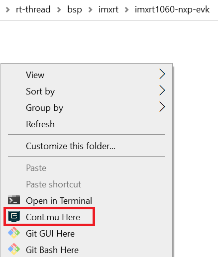

To download RT-Thread, perform the following steps:
D:\rt-thread\.$ cd rt-thread
$ git reset --hard v5.0.2
$ git cherry-pick a275a92b4af423faef812699c133a5243c68f6d2
.D:\rt-thead\rt-thread\bsp\imxrt\imxrt1060-nxp-evk). Right-click the window and select ConEmu Here to open env console.